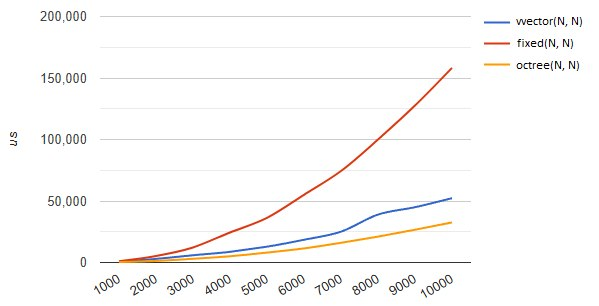
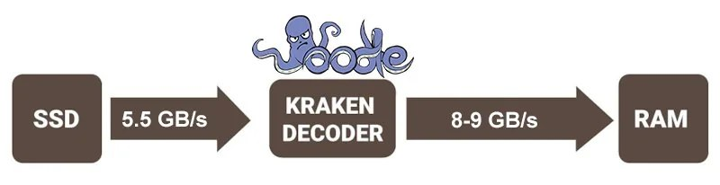
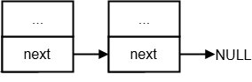
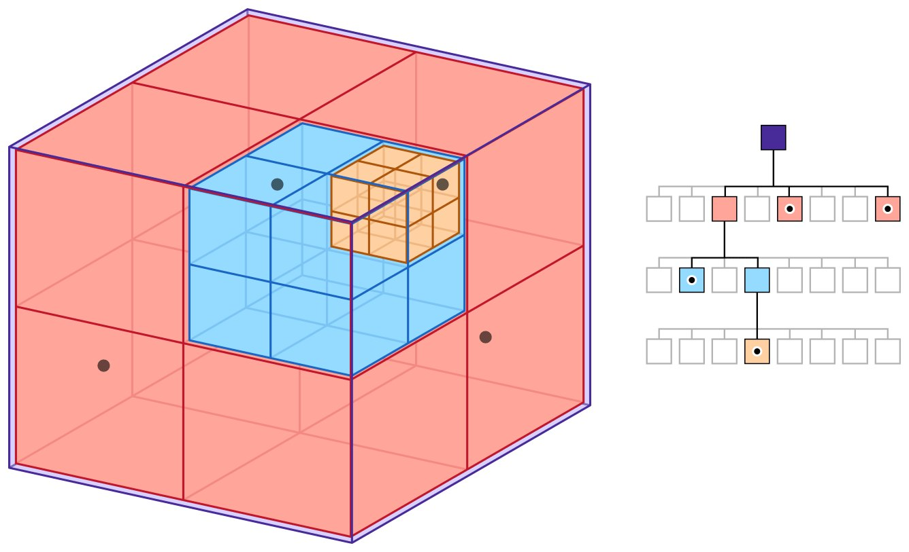
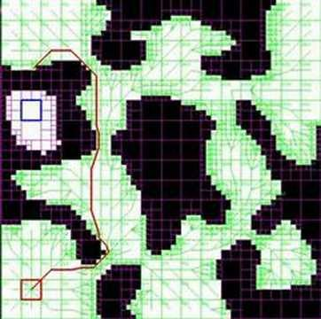

Whether you're starting to build your own game or joining an existing project, when the time comes to optimize memory and do all sorts of tuning, the same questions always come up. Should you use your own containers? If you go with your own, which is better to pick — something like a vector, or is a map a better fit? Is a linked list the best choice for frequent insertions and removals of elements? And where did all those insertions even come from in the first place — but that's a different question, of course.
In most cases studios start to implement their own solutions tailored to the game, and over time this leads to a library of solutions, and quite often to a full replacement of the entire STL stack. The main reason is to achieve contiguous placement of elements in memory in order to maximize cache locality when iterating over them. I hope it's clear why this is done: it's often faster to walk over 1000 elements that lie one after another than over a dozen that are scattered across different parts of RAM.
If you're not ready to write and maintain your own STL, try to use vector — it's at least predictable in terms of timing on all platforms. That's what most C++ game developers will tell you, but the problem is that vector reallocates the stored objects in memory when inserting new elements, as well as when removing any element other than the last one. This means that pointers to the vector's elements become invalid, and then all the dependencies and interactions between elements stop working.
Of course, you can access elements through indices instead of pointers, but indices too lose their validity when inserting or removing elements not at the end of the container. On top of that, memory allocation isn't free either and can seriously hurt performance if used improperly. Yes, vectors win over other containers in many places, but game development doesn't live by vector alone — we have something faster and more stable too.
This is part of the "Game++" series:
Game++. Unpacking containers <=== You are here
Foreword
One of the downsides of using the C++ standard library from a vendor or SDK is that they only provide the interface of the containers, with no way to change the allocator or change the container's growth policy without digging into the implementation. C++17 fixed this a little by adding polymorphic allocators, but they didn't get it quite right either, leaving virtual calls inside for alloc/dealloc.
On top of that, there are several STL implementations, and although the basic containers usually don't differ much, they still look like a mess of defines and very non-trivial code because of the need to support various versions of the standard and various compilers, which makes them hard to understand. On the plus side, the containers will compile and work as advertised in most cases.
fixed array
A fixed-size container, introduced as std::array starting with C++11. One way or another it's present in most libraries and is essentially a wrapper over a region of memory; the size is set at compile time and can't change. Elements are stored contiguously without using dynamic allocation.
The main plus is that it provides the interface of a regular STL container. The implementation, in general terms, again boils down to a wrapper over a C array, and a predictable size lets the compiler do more optimizations, vectorize an algorithm or even unroll it completely, as well as do additional checks.
template <typename T, size_t SIZE>
class array {
public:
size_t size() const { retrn SIZE; }
bool empty() const { return !size(); }
const T * data() const;
T * data();
typedef ArrayIterator<T> iterator;
iterator begin();
iterator end();
private:
T values_[MAX_SIZE];
};+--------------------------------------------+
| |
| +-----------+ |
| | size() | -> SIZE (fixed) |
| +-----------+ |
| |
| +-----------+ |
| | begin() | --+ |
| +-----------+ | |
| | |
| +-----------+ | |
| | end() | --+--------+ |
| +-----------+ | | |
| | | |
| +-----------+ | | |
| | data() | --+ | |
| +-----------+ | | |
| v v |
| +-------------------------------+ |
| | BUILT-IN FIXED-SIZE ARRAY |
| |+------+------+------+------+ | |
| || T[0] | T[1] | T[2] | ... | | |
| |+------+------+------+------+ | |
| |<------- SIZE (constant) ----->| |
| | values_ | |
| +-------------------------------+ |
| |
+--------------------------------------------+https://github.com/gcc-mirror/gcc/blob/master/libstdc++-v3/include/std/array
https://github.com/microsoft/STL/blob/main/stl/inc/array
Often used as a pool, for example in particle systems, resource systems, animations — in general, anywhere the limits on the data are known.
struct ParticleEmitter {
gtl::array<Particle, MAX_PARTICLES_PER_EMITTER> particles;
// ...
};
template<typename ResourceType, size_t PoolSize>
class ResourcePool {
gtl::array<ResourceType, PoolSize> resources;
gtl::array<bool, PoolSize> used;
// ...
};
struct SkeletonJoint {
gtl::array<int, MAX_CHILD_JOINTS> childJoints;
gtl::array<float, 16> transformMatrix; // 4x4 matrix
};
struct Skeleton {
gtl::array<SkeletonJoint, MAX_JOINTS> joints;
};fixed matrix
Multidimensional arrays are data structures that organize elements in two or more dimensions; the most common examples of such structures are matrices and textures. They long ago grew into their own implementations, whose solutions have moved far away from ordinary arrays. Raw multidimensional arrays are also often used, and in most cases they are implemented in a contiguous region of memory, with elements stored in "row by row" order (row-major order).
int matrix[3][4]; // 3 rows, 4 columns
gtl::array<gtl::array<int, 4>, 3> matrix; // 3 rows, 4 columns
boost::multi_array<double, 3> array_type
// 4x4 transformation matrix
std::array<std::array<float, 4>, 4> transformMatrix = {{
{1.0f, 0.0f, 0.0f, 0.0f},
{0.0f, 1.0f, 0.0f, 0.0f},
{0.0f, 0.0f, 1.0f, 0.0f},
{0.0f, 0.0f, 0.0f, 1.0f}
}};
Eigen::Matrix4f transformMatrix = Eigen::Matrix4f::Identity();Which allows direct access through multiple indexing: matrix[i][j]; in the general case the index of a particular cell is computed by the formula.
flat_offset = (x0 - min0)*stride0 + (x1 - min1)*stride1 + ... + (xN - minN)*strideNhttps://github.com/dsharlet/array
https://github.com/libigl/eigen/blob/master/Eigen/src/Core/Matrix.h
object transforms: position, rotation and scale matrices, projection matrices for the camera
physics engine: inertia matrices for rigid bodies, constraint matrices for skeletons
rendering and animation: skeletal animation, morphing and keyframe interpolation matrices
navigation: navigation meshes, traversability maps, weight matrices for path computation, spatial partitioning maps (octrees, BSP)
nonlinear matrix
vector<vector<int>> matrix(11035, vector<int>(11035));It may seem strange to you that anyone would need such madness as a vector of vectors. Until you run into level and content generation. Content generation, object placement, level checking and tracing (the release build) takes substantial time, and on large maps the desire arises to parallelize this work.
At first there's almost no difference, but as the map size, the number of tiles, objects and so on grows (or the number of threads), we reach a point where the threads start spending more and more time waiting for updates of shared data that has been loaded into the caches of different cores. When one of the threads changes data in the matrix, the others are forced to update that information on their side. Updating a single byte invalidates the whole cache line where that byte lives, and if it was loaded into another core's cache — this leads to its update, a kind of cache poisoning, and good cache locality in this case only gets in the way. A vector of vectors is less prone to this effect, but the best results come from a segmented octree bounded in volume, more on that below.

Navigation meshes (NavMesh) are usually built on this pattern too, which lets you implement objects of arbitrary structure, not just rectangular ones, while saving memory for storing the level's description.
Matrices of such large sizes (more than 4k×4k) are quite rarely used in standard game scenarios because of the high demands on memory and compute resources. They are, however, applied in specific cases for:
large open worlds: representation of heightmaps, storing terrain traversability information, megamaps
procedural content generation: generating and storing detailed landscapes, voxel representations of 3D spaces
simulation of physical phenomena: fluid simulation, runtime simulation of destruction and deformation
dynamic maps: game fields with a high level of detail, for tracking interactions between players/objects, for precomputing visibility, graphs of potential paths for NPCs
linear dynamic matrix
Dynamic multidimensional arrays, mostly two- and three-dimensional, are a fundamental data structure in game development, providing flexibility in development, from a simple tile-based level map all the way to whole voxel models and use in simulating physical processes. And tile and voxel maps won't necessarily appear only in isometric strategies — they are also, in themselves, convenient structures for organizing a level's working space, dividing it into zones, areas and triggers.
struct Tile {
TileType type;
bool walkable;
float height;
// ...
};
struct TileMap {
gtl::vector<Tile> tiles;
int width, height;
TileMap(int width, int height) : width(width), height(height),
tiles(width * height) {}
Tile& at(int x, int y) {
return tiles[y * width + x];
}
gtl::array<Tile*, 4> getNeighbors(int x, int y) {
gtl::array<Tile*, 4> neighbors = {nullptr, nullptr, nullptr, nullptr};
if (x > 0) neighbors[0] = &at(x-1, y);
if (y > 0) neighbors[1] = &at(x, y-1);
if (x < width-1) neighbors[2] = &at(x+1, y);
if (y < height-1) neighbors[3] = &at(x, y+1);
return neighbors;
}
};class VoxelObj {
private:
gtl::vector<uint8_t> voxels;
int width, height, depth;
public:
VoxelObj(int width, int height, int depth)
: width(width), height(height), depth(depth),
voxels(width * height * depth) {}
uint8_t& at(int x, int y, int z) {
return voxels[(z * height + y) * width + x];
}
Mesh generateMesh() {
// build a model from the voxel grid
// ...
}
};Simulation of physical systems (springs, pendulums)
Character animation using linear models
Prediction of object movement
Managing objects with smooth transitions between states
Simulating vehicle behavior
here we smoothly move on to vectors, which also have some peculiarities.
linear vector
The most ordinary dynamic array (https://en.cppreference.com/w/cpp/container/vector), one of the most frequently used containers of the C++ standard library, which is especially useful in development when used wisely.
It's a chunk of memory allocated on the heap that is automatically managed when certain operations happen to the elements. Elements are stored contiguously in memory, you can access them randomly in constant time, and it grows (and copies when necessary) when new elements are added.
It provides amortized O(1) complexity for adding elements to the end, provided there is free space. This is important, because many people forget about array reallocation and the problems associated with it. The growth mechanism here is very simple: when there aren't enough free elements, a new block of memory is allocated (the size depends on the growth policy), then the elements are copied/moved from the old block into the new one (there can be several variants here, from a simple memcpy on POD data to a deep-copy pass, and this is perhaps the main downside of this class), then the old memory is freed. That is, at the moment of growth we'll need 2x the memory to store all the elements. But overall this mechanism provides O(1) complexity for the push_back operation, and let's not forget that individual operations can be expensive, for example insertion at the beginning.
template <class T, class Allocator = std::allocator<T>>
class vector {
private:
T* _begin; // Pointer to the first element
T* _end; // Pointer to the position past the last element
T* _capacity; // Pointer to the end of the allocated memory
Allocator _alloc; // The allocator in use
// ...
};+--------------------------------------------+
| |
| +-----------+ |
| | _begin | --+ |
| +-----------+ | |
| | |
| +-----------+ | |
| | _end | --+------+ |
| +-----------+ | | |
| | | |
| +-----------+ | | |
| | _capacity | --+------+------+ |
| +-----------+ | | | |
| | | | |
| +-----------+ | | | |
| | _alloc | | | | |
| +-----------+ | | | |
| v v v |
| +-------------------------------+ |
| | CONTIGUOUS MEMORY BLOCK | |
| |+------+------+------+------+ | |
| || T[0] | T[1] | T[2] | ... | | |
| |+------+------+------+------+ | |
| |<------ size() ------->| | |
| |<-------- capacity() --------->| |
| +-------------------------------+ |
| |
+--------------------------------------------+// Preallocating memory
vector<GameObject> entities;
entities.reserve(128);
// Optimizing element insertion
entities.resize(128);
for (int i = 0; i < 128; ++i) {
entities[i] = GameObject();
}
// Fast removal without preserving order
entities[idx] = gtl::move(entities.back());
entities.pop_back();game objects: lists of active objects in the scene, collections of enemies, NPCs, items, event queues for processing
physics engine: storing primitives, contact lists of physical bodies, storing vertices and indices for physical meshes
graphics and rendering: vertex and index buffers for models, triangle lists, queues of objects for rendering, textures, shaders and materials
resources: object pools for reuse, resource queues for loading/unloading, asset caching
particle systems: storing and updating active particles, emitters and effects
sound: queues of sound effects, lists of active sources
AI: NPC navigation paths, decision trees and FSMs, data structures for pathfinding (A*)
events: message and event buffers, callback lists, command queues for execution
debugging: event logs, statistics
stable vector
Vectors are convenient and widely used, but they have a significant limitation: iterators and references to elements become invalid when a non-last element is removed or the vector is grown, unlike stable containers such as std::list or std::set, which keep references and iterators valid until the element is removed. However, stability rules out element adjacency in memory, which makes it hard to create a "stable vector" with the characteristics of std::vector. Like std::vector, it supports random-access iterators, but it sacrifices element adjacency for the sake of stability. This means that references and iterators to elements remain valid until the element is removed. An iterator obtained from end() also remains valid until the stable_vector is destroyed.
In its structure it often resembles a list laid out in a contiguous region of memory.
template <typename T>
class stable_vector {
private:
struct node {
T value;
bool valid;
template <typename... Args>
node(bool v, Args&&... args) : value(forward<Args>(args)...), valid(v) {}
};
vector<unique_ptr<node>> nodes;
... STABLE_VECTOR<T>
+--------------------------------------------+
| |
| +-----------------------------------------+
| | nodes | std::vector<std::unique_ptr<node>> |
| +-----------+ |
| | [0] ------|--> +-----------------+ |
| | | | node | |
| | | | +-------------+ | |
| | | | | value: T | | |
| | | | +-------------+ | |
| | | | | valid: true | | |
| | | | +-------------+ | |
| | | +-----------------+ |
| | [1] ------|--> +-----------------+ |
| | | | node | |
| | | | +-------------+ | |
| | | | | value: T | | |
| | | | +-------------+ | |
| | | | | valid: true | | |
| | | | +-------------+ | |
| | | +-----------------+ |
| | [2] ------|--> +-----------------+ |
| | | | node | |
| | | | +-------------+ | |
| | | | | value: T | | |
| | | | +-------------+ | |
| | | | | valid: false| | <-- removed element
| | | | +-------------+ | |
| | | +-----------------+ |
| | ... | |
| | [n] ------|--> +-----------------+ |
| | | | node | |
| | | | +-------------+ | |
| | | | | value: T | | |
| | | | +-------------+ | |
| | | | | valid: true | | |
| | | | +-------------+ | |
| | | +-----------------+ |
| +-----------+ |
| |
+--------------------------------------------+game objects: storing long-lived game objects that are frequently referenced, stable object identifiers available on removal
components: storing components and entities, providing stable references between components
graphics: managing resources that must stay at the same addresses, meshes and geometry referenced by level rendering systems
physics: storing physical bodies and colliders
animation: storing shared skeletons and bones
AI: storing behavior data that requires stable references, behavior archetypes, static navigation graphs and movement paths
scripting: objects referenced by external scripts, target objects of interactive actions in cutscenes and finishers, objects that must keep stable identifiers for synchronization during animation
saving and loading: objects with serialization that require stable pointers during deserialization, systems that work with partially loaded data
Used mainly for long-lived game entities and lets you keep persistent references to game objects that don't need to be revalidated on creation/removal.
It's also often found in a component-based object system, where you can safely reference an object's components without the risk of getting a dangling pointer/reference when adding/removing components.
Another use is graphs, to provide stable references between graph nodes even when its structure changes.
https://github.com/david-grs/stable_vector/blob/master/stable_vector.h
https://www.boost.org/doc/libs/1_85_0/boost/container/stable_vector.hpp
sparse vector
Sparse arrays are containers in which empty gaps are deliberately left between elements, which lets you implement fast insertion of new elements without having to shift a large amount of data.
Imagine we need to organize an array of game units on a level, but we also want to keep the ability to partially and, as far as possible, quickly sort groups of units. Given that groups aren't infinitely sized, but usually 4-8-16-32 in a group, you can deliberately leave empty spots after inserting a new element, so that when you create a new unit you can place it in the right spot without moving all the others.
This approach is used everywhere in strategies with a large number of units, for example SC2/Total Annihilation, and practically doesn't lead to runtime memory allocations. The game's developers were forced to use such a unit placement mechanism, because the technical means of that time didn't allow doing it at runtime. If a group ran out, a new one would start being created at a larger distance from the last allocated element, which is how the wait for large groups of units was balanced if the player was amassing an army.
particles and effects: insertion and removal of new particles, managing short-lived objects
level editors: placing and moving objects, undo/redo of operations without complex data reorganization, fast addition of new objects into densely packed scenes
physics: insertion of new contacts and joints, efficient insertion of new contacts during destruction
AI: dynamic BTs and FSMs, managing task priorities
animation: inserting keyframes, managing animation layers
+---+---+---+---+---+---+---+---+---+---+---+---+---+---+---+
| A | | | | B | | | | C | | | | D | | E |
+---+---+---+---+---+---+---+---+---+---+---+---+---+---+---+
0 1 2 3 4 5 6 7 8 9 10 11 12 13 14
+---+---+---+---+---+---+---+---+---+---+---+---+---+---+---+
| A | | | | B | B1| | | C | C1| | | D | | E |
+---+---+---+---+---+---+---+---+---+---+---+---+---+---+---+
0 1 2 3 4 5 6 7 8 9 10 11 12 13 14packed vector
The first things that come to mind here are implementations of bit and numeric packing, for example like std::bitset, or vector<float16>, which let you substantially reduce the memory cost of storing certain data types.
But packed vectors are often interpreted more broadly; one approach to compressing data in a std::vector is to split the data into blocks and compress each block separately. This allows random access to the data with a relatively constant access time. For example, you can use an algorithm where each block contains compressed data for elements; such a mechanism works well for data with a predictable compression ratio.
This organization also fits rarely used data perfectly — "rarely" in the case of a game means data that isn't touched for seconds, for example statistics, various game metrics, inventory items, settings, quests, parts of the story and so on, i.e. data that is needed during the game from time to time, and there's no point in keeping it fully resident either.
+--------------------------------------------+
| |
| +-----------+ |
| | chunks | vector<data_chunk> |
| +-----------+ |
| | [0] | --+ |
| | [1] | ---+ |
| | [2] | ----+ |
| | ... | \ |
| | [n] | ------+ |
| +-----------+ \ |
| \ |
| +-----------+ \ |
| | data | --+ \ |
| +-----------+ | \ |
| v v |
| +-------------------------------+ |
| | CONTIGUOUS BLOCK OF COMPRESSED DATA |
| |+------------++-----------+ | |
| || Chunk 0 || Chunk 1 |... | |
| || offset=0 || offset=X | | |
| || size=X || size=Y | | |
| |+------------++-----------+ | |
| +-------------------------------+ |
| |
+--------------------------------------------+template<class T>
class packed_vector {
struct compressed_data_chunk {
size_t offset;
size_t size;
};
std::vector<compressed_data_chunk>;
void* data;
}inventory: compact storage of items in players' inventories, metadata of rarely used items, storing modifiers and characteristics of equipment
quests: quest descriptions and states, rarely changed dialogues and story elements, conditions for activating and completing tasks
statistics: storing game metrics and statistics, achievement and reward progress, historical data about the player's progress
graphics: storing UV coordinates and vertex attributes, compressed textures and normal maps, levels of detail for objects far from the camera
AI: compact representation of behavior graphs, compressed decision tables for AI, data about the state of the game world for NPCs
sound: sound banks, audio file metadata, parameters and settings of sound effects
procedural generation: storing parameters for content generation, intermediate generation results, storing generation rules, storing cosmetic options
Another, but related approach is to use compression over the entire volume of data, without bothering element by element, and to unpack/pack it on access, for example using fast algorithms like LZW/Oodle on the fly.
This includes compression of text data, sound, animations. It's more efficient to load whole packs of textures, sounds or animations for a model from disk, in blocks of several megabytes, but usually only a few of them are needed from a block, and keeping them all unpacked in memory would be expensive, so they sit as they were loaded. As you move over such an array you'll have a temporary proxy object that, when destroyed, will be packed up again until next time.

This approach becomes especially interesting if the compression algorithms are supported by the hardware, for example the PS5 implements Kraken (Oodle). That is, the file on disk is stored in a certain format, and when reading through the SDK you get its temporary already-unpacked copy, which goes back to disk also packed — everything works transparently through the SDK provider.
The same scheme will work with ordinary in-memory data too, and all the intermediate work is taken on by the SDK, while you simply walk over the array.
https://github.com/claudiomattera/fixed-point-vector/blob/master/lib/include/fixedpointvector.h
static vector
In 2007 EASTL rolled out the concept of small_vector, which had a small buffer for 16 elements inside the class itself and, when using more elements, would already go to the allocator for memory.
A special case of the small_vector implementation, where we removed the ability to allocate memory, turns it into a static_vector. Almost immediately such fixed-size containers became popular in game engines, especially where dynamic memory allocation was undesirable.
Unlike a regular vector or small_vector, static_vector completely avoids dynamic allocation, storing all elements in a pre-allocated fixed-size buffer. This approach provides predictable memory usage and no overhead for resource management.
https://www.open-std.org/jtc1/sc22/wg21/docs/papers/2018/p0843r2.html
https://github.com/dalerank/Akhenaten/blob/master/src/core/svector.h
https://github.com/gnzlbg/static_vector
https://github.com/electronicarts/EASTL/blob/master/include/EASTL/fixed_vector.h
template <typename T, size_t Capacity>
class static_vector {
private:
size_t size_ = 0;
alignas(T) byte buffer_[Capacity * sizeof(T)];
T* data() { return reinterpret_cast<T*>(buffer_); }
const T* data() const { return reinterpret_cast<const T*>(buffer_); }
....
}+--------------------------------------------+
| |
| +-----------+ |
| | size_ | current number of elements |
| +-----------+ |
| |
| +-----------+ |
| | data() | --+ |
| +-----------+ | |
| | |
| v |
| +-------------------------------+ |
| | ALIGNED STATIC BUFFER | |
| | alignas(T) byte buffer_ | |
| |+------+------+------+------+ | |
| || T[0] | T[1] | T[2] | ... | | |
| |+------+------+------+------+ | |
| |<-- size_ -->| | |
| |<-------- Capacity ----------->| |
| +-------------------------------+ |
| |
+--------------------------------------------+game loop: visible objects for rendering, temporary buffers for processing input data, lists of objects for physics processing, lists of a character's active abilities
physics: storing contact points, results of spatial queries
particles: buffers of active particles in emitters, buffers of particles closest to the camera, temporary structures for sorting particles
rendering: buffers for render commands, lists of objects within the frustum, buffers for sorting by materials
sound: buffers for active sound sources
multithreading: thread-local buffers, temporary structures for tasks in a thread pool, work queues
small vector
This is a container that first uses stack memory and, when it runs out, switches to dynamic allocation. It supports insertion and removal at the end in O(1), and in the middle in O(n). It lets you specify the element type, the size of the built-in storage and the allocator type. In C++17 it's present in the std::pmr::vector implementation.
The approach is analogous to small string optimization (SSO); it reduces the overhead of memory allocation and improves performance in scenarios with a small number of elements. If you're sure that your vector will always be small, you can keep all the elements on the stack and avoid expensive heap allocations. Such cases come up more often than it seems.
On my current project, analysis of memory usage showed that the vector size varies from 2 to 80 elements in 80% of cases, and most short-lived objects don't exceed a size of 512 bytes. That is, roughly 40kb on the stack in the worst case will be enough to get rid of most allocations. And in some cases this replacement with small_vector or an analog of pmr::vector gave a noticeable reduction in frame time of 10-15%.
The implementation will overlap with the static vector, but the main interest lies in the memory allocation function for new elements, which, when it goes past the boundary of the built-in buffer, will allocate memory on the heap and from then on work there.
template<typename T, size_t MaxSize = 8, typename NonReboundT = T>
struct small_buffer_vector_allocator{
alignas(alignof(T)) std::byte m_smallBuffer[MaxSize * sizeof(T)];
std::allocator<T> m_alloc{};
bool m_smallBufferUsed = false;
T* allocate(const size_t n) {
if (n <= MaxSize) {
m_smallBufferUsed = true;
return reinterpret_cast<T*>(&m_smallBuffer);
}
m_smallBufferUsed = false;
return m_alloc.allocate(n);
}
void deallocate(void* p, const size_t n) {
if (&m_smallBuffer != p)
m_alloc.deallocate(static_cast<T*>(p), n);
m_smallBufferUsed = false;
}
}+--------------------------------------------+
| |
| +-----------+ |
| | size_ | current number of elements |
| +-----------+ |
| |
| +-----------+ |
| | capacity_ | total capacity |
| +-----------+ |
| |
| +-----------+ |
| | data_ | --+ |
| +-----------+ | |
| | |
| +-----------+ | |
| | alloc_ | | |
| +-----------+ | |
| | |
| +---------------------+ |
| | LOCAL STORAGE | |
| | (built-in buffer) |<------+ |
| | alignas(T) buffer_[N] | |
| +---------------------+ | |
| | |
| Points to: | |
| v |
| +-------------------------------+ |
| | DATA (local or on the heap) | |
| |+------+------+------+------+ | |
| || T[0] | T[1] | T[2] | ... | | |
| |+------+------+------+------+ | |
| |<-- size_ -->| | |
| |<-------- capacity_ ---------->| |
| +-------------------------------+ |
| |
+--------------------------------------------+events and commands: buffers for user-input event queues, command lists, temporary containers for game actions
physics: storing contact lists during collisions (usually 1-4 contacts), temporary intersection-check buffers, accumulating geometry trace results
animation: a character's animation tracks, currently blended animations, buffers for skeletal transforms
objects: entity components (usually 5-10 components), lists of child objects in scenes, collections of states and effects
rendering: buffers for render passes, material lists for objects, active light sources affecting an object
resources: lists of active resources for loading/unloading, object dependencies (usually few), caches of recently used resources
AI: short navigation segments between path points, lists of targets for enemy AI
physics: buffers for active objects, lists of dynamic objects near the player, lists of active connections between objects, joint replications
https://www.boost.org/doc/libs/1_60_0/doc/html/boost/container/small_vector.html
https://llvm.org/doxygen/classllvm_1_1SmallVector.html
https://llvm.org/doxygen/SmallVector_8h_source.html
https://github.com/facebook/folly/blob/main/folly/docs/small_vector.md
dirty_vector
This is a small variation of the standard container, which marks elements as removed and moves them to the end of the allocated region (or leaves them in place), but doesn't actually free the memory until an explicit cleanup function is called.
Instead of immediate removal, elements are simply marked as "dirty" (for example, with an additional flag or a special value). The real removal happens when clean() (or compact()) is called, which removes all the marked elements and, if necessary, shrinks the memory, while removal operations are performed in O(1), since they don't require shifting elements.
Often used for objects within a frame, to shift the work time (removal, moving, copying) on them closer to the end of the frame, for safe removal without modifying the array's structure and minimizing work with allocators during frequent addition/removal of objects.
+--------------------------------------------+
| |
| +-----------+ |
| | size_ | visible size (without dirty)|
| +-----------+ |
| |
| +-----------+ |
| | real_size_| actual size with dirty |
| +-----------+ |
| |
| +-----------+ |
| | capacity_ | total capacity |
| +-----------+ |
| |
| +-----------+ |
| | data_ | --+ |
| +-----------+ | |
| | |
| +-----------+ | |
| | dirty_flags| -|--+ |
| +-----------+ | | |
| v v |
| +-------------------------------+ |
| | CONTIGUOUS MEMORY BLOCK | |
| |+------+------+------+------+ | |
| || T[0] | T[1] | T[2] | ... | | |
| || clean| dirty| clean| ... | | |
| |+------+------+------+------+ | |
| |<--- size_ --->| | |
| |<------ real_size_ ----------->| |
| |<-------- capacity_ ---------->| |
| +-------------------------------+ |
| |
+--------------------------------------------+particles: when particles "die", they can be marked as removed, but actually removed only after processing all the particles in the frame, to avoid iteration problems.
game objects: objects are marked for removal (for example, enemies, projectiles), but their actual removal is deferred until the end of the frame, to avoid problems with collisions and interactions.
object pools: objects aren't actually removed, but marked as inactive and can be reused later.
events: for safe removal of event listeners during the processing of the event loop.
components: deferred removal of entities and their components, to avoid problems iterating over systems.
rendering: grouping operations on graphics objects and minimizing buffer rebuilds.
physics: to avoid problems with removing objects in the middle of a simulation step.
memory: minimizing fragmentation during frequent creation and removal of objects, especially on consoles.
buddy_vector
The concept of the container appeared in the Civilization series of games, as an answer to the need for a simple algorithm for storing a history of values; for example, this is how the movement history of units over the last N turns was stored for smooth interpolation of movements. It's all still based on the standard vector, but with a special element placement scheme. Instead of sequential placement, elements in such a vector are placed "every other one (N)", leaving empty cells between them. This lets you implement a shift of elements without physically moving them in memory.
The main idea is that the container stores several logical arrays (in our case 2) in one physical one — elements are placed either at even or at odd positions depending on the current state of the offset. The small distance between history elements reduces the overall cost of processing such a structure, and the linear placement of all elements lets you process them all at once without switching between separate arrays, as if they were implemented separately for each object.
After a certain event completes, the offset changes on element access and writing/reading happens to the neighboring cell. If needed, you can treat the current block as a separate array with sequential access and size cap.
historical data and interpolation: for storing previous states of objects (unit positions, animations), smooth interpolation or showing movement history.
undo/redo: lets you efficiently store and move between states without copying all the data.
replays and rewinds: efficiently stores key event frames, allowing fast fast-forward and rewind.
movement prediction: stores predicted positions and the ability to quickly switch between them when real data arrives.
physics: storing and updating collision data over several frames, synchronizing states between the local simulation and the one sent from the server.
animations: fast access to several animation frames with the ability to interpolate between them.
AI: fast switching between different weights to adapt AI behavior based on the history of the player's actions.
┌───────────────────────────────────────────────────────┐
│ BUDDY VECTOR │
├───┬───┬───┬───┬───┬───┬───┬───┬───┬───┬───┬───┬───┬───┤
│ 0 │ 1 │ 2 │ 3 │ 4 │ 5 │ 6 │ 7 │ 8 │ 9 │10 │11 │12 │13 │ ← index = i + offset % cap
├───┼───┼───┼───┼───┼───┼───┼───┼───┼───┼───┼───┼───┼───┤
│ A │ │ B │ │ C │ │ D │ │ E │ │ F │ │ G │ │ ← values
├───┼───┼───┼───┼───┼───┼───┼───┼───┼───┼───┼───┼───┼───┤
│ x | │ x │ │ x │ │ x │ │ x │ │ x │ │ x │ │ ← occupied (x) and empty ( )
└───┴───┴───┴───┴───┴───┴───┴───┴───┴───┴───┴───┴───┴───┘
↑ ↑ ↑ ↑ ↑ ↑
│ │ │ │ │ │
└───────┴───────┴───────┴───────┴───────┘Iterators and pointers
Although this topic is already familiar to most developers, it's worth looking at it specifically in the context of non-standard containers.
What is an iterator — it's a "lightweight" object, analogous to a T* pointer. Each container has its own iterator type. iter++ moves the iterator to the next element. *iter returns a reference to the current element, which is important for working with loops (for example, range-for).
Why do iterators and pointers get invalidated? Invalidation means that an iterator or pointer stops pointing to a correct object. This happens when the container's structure changes; in std::vector after push_back() references to elements may "go stale" if a memory reallocation happened.
In std::deque push_back() usually doesn't invalidate references to existing elements, since new blocks are added without redistributing the old ones.
Non-standard containers (for example, static_vector, flat_map) have their own peculiarities of iterator invalidation; for example, in static_vector invalidation happens only when going past the capacity and is effectively a crash. In small_vector the transition from the internal buffer to dynamic memory invalidates all iterators.
deque
Double-ended queues (deque, double ended queue) are containers that can be expanded or shrunk from both ends. Unlike vector, which is a single contiguous array, deque lets you insert elements both at the end (using push_back()) and at the beginning (push_front()). Vectors don't have this ability, since they only support efficient addition at the end.
It's implemented as a set of fixed-size blocks (chunks) linked together. For example, each block can store 16–512 elements, and when adding elements at the beginning or end a new block is created only when the current ones are full. This lets you perform push_front() and push_back() in O(1) without moving existing elements.
events: processing events with priorities, where new high-priority events are added at the beginning and ordinary ones at the end.
pathfinding: bidirectional A* search, where adding and removing nodes from both ends is required.
command history: undo/redo systems, new commands are added at the end, and on undo they can be added at the beginning.
animations: animation queues, where you can insert an urgent animation at the beginning without moving already scheduled ones.
physics: storing a sequence of collisions and contacts, new priority contacts are added at the beginning.
AI: an action scheduler, actions can be added either at the beginning or at the end of the sequence depending on priority and the player's behavior.
input: buffering user input, where events (for example movement) have priority over mouse events
particles: for efficiently managing the particle life cycle, especially when they must be processed in a certain order (smoke and water, after shards and glass).
resources: managing the loading and unloading of assets with dependencies
template<typename T>
struct simple_deque
{
T* elements;
T* first;
T* last;
size_t capacity;
};bcdeque (block-compressed)
A variation of the ordinary deque, designed for efficiently storing large double-ended queues (deque) with rarely used regions. It's used to reduce memory usage, and stores rarely used blocks in compressed form, automatically compressing and decompressing blocks as needed. Since the chunks aren't linked to each other, this makes it possible to amortize the complexity of operations to be close to an ordinary deque.
+----------------------------------+
| BLOCK_COMPRESSED_DEQUE<T> |
| |
| +----------------+ |
| | blocks |---+ |
| +----------------+ | |
| v |
| +-----+-----+-----+-----+ |
| | B0 | B1 | B2 | ... | |
| |plain|compr|plain| | |
| +-----+-----+-----+-----+ |
| | | | |
| v v v |
| +----+ +----+ +----+ |
| |Data| |Zlib| |Data| |
| +----+ +----+ +----+ |
| |
+----------------------------------+bounded_priority_deque
For a certain kind of task, games also use special structures, like bpdeque. With their help, territory patrol tasks are solved efficiently (NPC guards walk control points with minimal repetition and optimally in terms of memory), in strategies for resource-gathering pathfinding (units optimize routes for collecting wood, iron and so on scattered across the map), in economic simulators they are used to build routes between notional cities and factories, to build road networks and so on.
There are plenty of examples of use in games: in Civilization transport units and workers use bpdeque for movement tasks over the graph of tiles, in Witcher3 these structures are the basis of the daily movement cycles of townsfolk in settlements, so they don't crowd and don't repeat. In combat it's used to coordinate the actions of units in a group, picking different points on the player's orbit and not letting them attack at the same time.
Imagine an ordinary queue where priority tasks are pushed to the front, and unimportant ones are thrown out if there isn't enough room. When a lot of events happen in the game at once, we may simply not have time to handle them. This is where such a structure helps, guaranteeing that important tasks will be done first.
Elements are stored in a partially sorted array, and when a new element is added, the queue is rebuilt so that important elements end up closer to the beginning, and if the queue is full, those that end up at the "tail" are thrown out.
The main advantage of such a queue is speed and predictability. You always know in advance how much memory will be required, and you can get the top elements.
+-----------------------------------+
| [HEAD] [TAIL] |
| +---+---+---+---+---+---+---+ |
| | 5 | 3 | 2 | 4 | 7 | 1 | 6 | | <- Elements with priorities
| +---+---+---+---+---+---+---+ |
| ^ ^ |
| | | |
| min_priority max_priority |
| | | |
| [MIN_BOUND] [MAX_BOUND] |
+-----------------------------------+
INSERTION WITH PRIORITY:
insert(element, priority)
If priority < MIN_BOUND:
+---+---+---+---+---+---+---+---+
| X | 5 | 3 | 2 | 4 | 7 | 1 | 6 | <- Insert on the left (HEAD)
+---+---+---+---+---+---+---+---+
If priority > MAX_BOUND:
+---+---+---+---+---+---+---+---+
| 5 | 3 | 2 | 4 | 7 | 1 | 6 | X | <- Insert on the right (TAIL)
+---+---+---+---+---+---+---+---+
Otherwise (find position by priority):
+---+---+---+---+---+---+---+
| 5 | 3 | X | 2 | 4 | 7 | 6 | <- Insert in the middle
+---+---+---+---+---+---+---+RESOURCE GATHERING IN STRATEGIES:
[Wood] [Iron]
| |
[BASE]---+----[Stone]
|
[Gold]
BPDeque = [Iron, Wood, Gold, Stone]
- Priority = resource_value / distance_from_current_position
- Limit = max number of resources in the unit's memory
- The unit moves toward HEAD for the optimal routePatrol points:
[S]---[A]---[B]
| | |
[E]---[D]---[C]
BPDeque = [S, A, B, C, D, E] <- Control points in traversal order
- Priority = time of last visit
- MIN_BOUND = current time - max interval
- The guard always goes to the HEAD of the queue
- After a visit, the point is moved to TAIL with an updated priorityhttps://rmmilewi.github.io/files/lockfreequeue16.pdf
intrusive_deque/list

The elements contain built-in pointers, which removes the need for a separate array of pointers and lets you place objects in custom allocators, pools and so on. Such structures work especially well in combination with an object pool (intrusive_deque + object_pool): the object pool quickly hands out objects, the deque lets you quickly sort and process them as needed. It's used mainly for temporary objects (particles, projectiles, events, footstep sounds, collisions and so on).
typedef struct nodes {
struct list *next;
} nodes;
typedef struct item {
int val;
nodes items;
} item;Besides lower memory consumption, intrusive structures have better cache locality, which lets you iterate over them faster. In ordinary lists/deques, creating a new object and adding it to the list requires two allocations: one for the object and one for the list node, while here only one allocation is needed (the technical structure is embedded into the object itself) and it gives us fewer errors when working with raw memory. On top of that, we get the ability to debug errors better, because the technical data always lies nearby.
Nested lists also suffer less from cache misses. Iterating over an ordinary list requires first accessing the list of nodes, then the list of data and the data itself, while an intrusive one only dereferences the next node (and possibly a prefetch load, if we took care of it), and while we're doing the work on the data, the processor loads the data of the next element into the cache.
+----------------------------------+
| INTRUSIVE_DEQUE<T> |
| |
| +----------------+ |
| | head |---+ |
| +----------------+ | |
| | tail |---|---------+ |
| +----------------+ | | |
| v v |
| +------+ +------+ +------+
| |Node 0|<---->|Node 1|<---->|Node 2|
| | | | | | |
| |Value | |Value | |Value |
| +------+ +------+ +------+
| |
+----------------------------------+Intrusive structures are often used for working with objects that are frequently added and removed: the state of game objects (alive, killed, visible, hidden and so on), the list of active entities (NPCs, bullets, particles), in the physics engine for storing active collisions, in rendering for tracking the objects being drawn.
particles: sorting by lifetime for efficient removal, sorting by depth for correct alpha blending for smoke, fire, storing movement history with a bounded size
physics: collision queue, physics events
projectile pools: efficient reuse of projectile objects
sound: prioritizing sounds depending on volume and distance, managing background and one-shot sounds, character footsteps, managing many simultaneous footstep sounds
AI: behavior trees, task queues, sorting actions by their utility, managing NPC reactions to events in the world, managing NPC alert levels
timers and deferred calls: a queue of functions to call, splitting update logic into stages
LOD: LOD updates for nearby objects, texture managers, managing texture loading
https://elixir.bootlin.com/linux/v5.2/source/include/linux/list.h
https://github.com/electronicarts/EASTL/blob/master/include/EASTL/intrusive_list.h
https://github.com/boostorg/intrusive/blob/develop/example/doc_unordered_set.cpp
octree
Three-dimensional levels require efficient methods of organizing and manipulating spatial data (enemies, spawn points, triggers, computing physical interactions and so on). Among the many spatial data structures, a special place is held by the octree — a hierarchical structure that recursively divides three-dimensional space into eight smaller parts.

The main idea of an octree is the recursive division of space into eight equal subspaces (octants). Each octant can be further divided into eight smaller octants, and so on until the required level of detail is reached.
Building an octree begins with creating a root node representing the entire space of the scene. This node is divided into eight equal parts by drawing three mutually perpendicular planes through the center of the node. The resulting eight octants become the children of the root.
The division rule is usually tied to the density of objects in the octant. When the number of objects in a node exceeds some threshold value, the node is divided. This lets you adapt the structure of the octree to the distribution of objects in space, devoting more compute resources to areas with a large number of objects.
Inserting an object into the octree begins at the root node, then we determine which octants the object is in, and insert it into the corresponding child nodes. If the number of objects exceeds the limit, we divide the node into octants.
In the renderer it's used for a coarse determination of object visibility and for culling those that are behind the camera frustum, or outside the player's field of view. The octree lets you quickly determine which octants are outside the camera and simply not send objects from there for drawing.
The second use: physical interactions between the player and objects. The octree lets you reduce the number of checks similarly to the camera case, discarding pairs of objects that are in different octants of space. Instead, we'll only check those objects that are in the same or neighboring nodes of the octree.
During level generation, octrees help balance the number of objects in each area, or set generation rules and speed up various checks.
For navigation systems, octrees let you generate graphs for fast checks of the reachability of areas between the player and units.
The segmented octree concept extends this idea, allowing octants to be created only where it's permitted. Space is divided not only into octants, but also into segments for more efficient memory management, and in each of the segments its own segmentation rules can be set.
https://github.com/attcs/Octree
https://github.com/Eduardop/Octree
quadtree/btree
Tree-like structures similar to the octree, which divide space respectively into four quadrants and two parts. Each node of a quadtree is a rectangular area that can be recursively divided into four smaller quadrants. This structure is very efficient for spatial queries, navigation, storing statistical data and fast checks at the level.
One of the most common cases is optimizing collision detection in games — there's no point in fully running physics simulation on objects that are invisible or far from the player in most cases. And in both two- and three-dimensional spaces, before a heavy geometry check you can do a fast check against the level's representation in 2D space, or use a quadtree to reduce the number of checks before the main query. There's no point in checking whether a ray passes through the level geometry if the objects are in unconnected or blocked quadrants. There's no point in fully updating units in areas that are invisible or inaccessible to the player, it only eats up frame time.
Or before precisely computing a path to some point, a path can first be built over a simplified 2D map to check whether success is possible. In AI a system of LOD-ing the logic is often used as you move away from the player or out of their sight; for example, leg collisions, inverse kinematics or collisions in general are turned off — no one will see that a unit cut through a corner along a simplified path. Although there's one exception here: teeth must always have a full collision model, that's just how it's done in game development, you see.
Yes, games almost always cheat in navigation and AI, trying to simplify computations wherever possible, otherwise no amount of resources would be enough to keep things running — this doesn't apply to teeth, of course.
rendering (logical culling in 2D): lets you quickly determine which objects don't fall into the camera's view area, the view areas of the player or NPCs, or are occluded by other objects
physics: used to speed up collision checks, since it lets you quickly find potentially interacting objects. Physics engines such as PhysX, Havok, Bullet actively use quadtrees or variations of them to presort objects for possible contact
nearest-object detection (proximity queries): helps quickly find the nearest enemies, targets or areas of interest, actively used in Age of Empires, StarCraft for finding units.
streaming: dividing the world for streaming load (Streaming Worlds) for large worlds, such as in (Skyrim, GTA V), use quadtrees and octrees to determine the area that loads parts of the level.
navigation: used for AI navigation, determining coverage zones or blocks of space for determining obstacles and lines of sight.
particles and effects (particle systems): particles (smoke, fire, sparks) for more effective display and avoiding clustering are placed in leaf octants or quads

object_pool
They prevent memory fragmentation and the expensive operations of allocating/freeing memory. Instead of creating and destroying objects (bullets or particles, effects), memory for a fixed number of objects is allocated in advance (and possibly they are instantiated) and reused for work without removing the object.
When an object isn't needed, it's either "frozen" (notionally moved below the level for models) or reset to its initial state, for example a T-pose at the spawn point. The main point of this container is that it holds "live" objects ready for work; it's cheaper for performance to keep a dozen loaded objects in memory than to create them one at a time at the needed moment.
bullet pool: bullets and rockets are created and destroyed very quickly. If you allocate memory for a new object each time, this leads to fragmentation and reduced performance
particle systems: particles of smoke, fire, sparks and other effects need to be created quickly and in large numbers, preferably without reallocations
AI: when an enemy "dies", its object isn't destroyed, but reset to its initial state and moved to the inactive pool (physically the model can be moved below the scene). When a new enemy appears, it's taken from the pool instead of creating a new one.
decals: decals in GTA V, car objects, NPCs or tire tracks stay active only in the player's zone. When they leave, they're deactivated but not removed, so they can be reused later. The size of this pool is fairly large, but not unlimited — you can overload this system and see old objects disappear as new ones appear
ui pooling: when you need to have many floating names, damage popups, effect indicators and so on. These elements aren't created anew each time, but taken from the pool.
navigation (path pooling): in Age of Empires computed paths aren't destroyed after completion (they're cached for close entry/exit points), but used for other units, to reduce the load on the pathfinding system.
┌───────────────────────────────────────┐
│ Object Pool │
│ (Inactive Objects) │
├───────┬───────┬───────┬───────┬───────┤
│ [O1] │ [O2] │ [O3] │ [O4] │ [O5] │
└───────┴───────┴───────┴───────┴───────┘
▲ │ ▲ ▲
│ ▼ │ │
┌──┴───────────────────────┴───┐ │
│ Active Objects │ │
├──────────────────────────────┤ │
│ AI ────► [O2] │ │
│ Phys ────► [O3] │ │
└──────────────────────────────┘ │
│
Render ────► [O5]template <class T, size_t N>
class Pool {
public:
using const_iterator = typename std::array<T,N>::const_iterator;
template<class ...Args>
Pool(Args&& ...args)
:num_of_avail_(N), storage_{}, status_{}
{
storage_.fill(T{std::forward<Args>(args)...});
status_.set();
}
...
private:
size_t num_of_avail_;
std::array<T,N> storage_;
std::bitset<N> status_;
};https://github.com/massimo-marino/object-pool
https://gameprogrammingpatterns.com/object-pool.html
https://github.com/bitshifter/objectpool
https://www.boost.org/doc/libs/1_83_0/boost/pool/object_pool.hpp
ring/circullar_buffer
They work like a looped tape. When the data reaches the end of the buffer, writing continues from the beginning. These structures are ideal for particle systems, the history of the player's actions, logs or input buffering.
The basis of a ring buffer is an ordinary fixed-size array. To track positions we set up two pointers: head and tail. The head indicates where we'll read elements from, and the tail where we'll write new ones. When adding a new element, we write it at the tail's position and move the tail forward.
When we read an element, we take it from the head's position and move the head forward. The most interesting thing happens when the pointers reach the end of the array — they simply "jump" to the beginning. This is what creates the effect of a ring or circle.
Ring buffers are often used in situations where data arrives in a constant stream and must be processed sequentially: audio, video, event history — new fragments are added at the end, processed ones are removed from the beginning. Exchanging events between the game's subsystems (input processing, UI) or threads (the task system).
There's a small ambiguity when working — determining whether the buffer is full or empty. In both of these cases head can equal tail; an alternative approach is to leave one position empty. In this case the buffer is considered full when the next position after tail coincides with head.
https://github.com/dalerank/Akhenaten/blob/master/src/core/circullar_buffer.h
https://github.com/DNedic/lockfree/blob/main/lockfree/spsc/ring_buf.hpp
https://github.com/AndersKaloer/Ring-Buffer
https://github.com/jnk0le/Ring-Buffer
Circular Buffer
+-------------------------------+
| |
v |
[_, _, _, _, _, _, _, _, _, _, _]
↑
h,t
[A, B, C, _, _, _, _, _, _, _, _]
↑ ↑
h t
[A, B, C, D, E, F, G, H, J, K, L]
↑ ↑
h t
[G, B, C, D, E, F, G, H, J, K, L]
↑ ↑ - ---------------------- ->
t hcached_hashtable
Caching hash tables fit certain game development patterns well, not all of them of course. Because of the way game objects with components are built, most components are used rarely, and only about a third are needed every frame or more often. These are usually movement and AI components, "hot" properties and components.
This kind of hash table combines the advantages of standard hash tables with a caching mechanism for higher performance — in a standard hash table looking up an element has on average O(1) complexity, but with collisions or a high fill of the table it starts to degrade.
A cached hash table solves this problem by maintaining an additional table, usually small (32-128 elements), which contains recently used or frequently requested elements to provide faster access.
+------------------------------------------------------+
| CACHED HASH TABLE |
+------------------------------------------------------+
|
+------------------+-------------------+
| |
v v
+-------------+ +---------------+
| CACHE |<----------------->| MAIN TABLE |
| (fast | Sync | (persistent |
| access) | | storage) |
+-------------+ +---------------+
| |
| Lookup element | Lookup element
| (first) | (if not found
| | in cache)
v v
+-------------+ +---------------+
| [K1] -> V1 | | [K1] -> V1 |
| [K2] -> V2 | | [K2] -> V2 |
| [K3] -> V3 | | [K3] -> V3 |
| ... | | [K4] -> V4 |
| [Kn] -> Vn | | ... |
+-------------+ | [Km] -> Vm |
^ +---------------+
| ^
| |
+--------------------------------------+
Eviction/ReplacementWhen looking up an element, the table first checks whether it's in the cache, and returns it if it's there, while its metadata (use counter, time of last access and so on) is updated. If the element isn't found, then a lookup is performed in the main table, this element is added to the cache (evicting or replacing another element if the cache is already full) and returned to the main logic.
The key component of this approach is the cache management strategy, which determines which elements to keep in the cache and which to evict when the cache is full. Mostly they use LRU (evict the element that hasn't been accessed for a long time), LFU (evict the element that's accessed least often), FIFO (evict elements in the order they were added), or their own custom rule (on one of the projects it was collapsing every second element).
Why ordinary hash tables may not be enough: for example a game resource system; modern games contain a great many diverse elements — textures, shaders, models, configs of particles and ammo, weapons. And when all of this starts to affect and depend on each other, the number of records reaches thousands and tens of thousands.
A simple example: a weapon can use different types of ammo, an ammo contains the description of a particle (the bullet, payload), which must correctly interact with the materials on the level, the sound and effect for metal and wood will be different, all of this is written/configured in the game DB and pulled out as needed. The player usually uses several rounds of the same type, i.e. having pulled this information from the DB on a shot, you won't have to look it up again on the next one.
In the renderer for caching shaders: a shader can't really do branching (it can, but it's expensive), so every if in a shader is just a different shader, which with complex shaders leads to a combinatorial explosion. To avoid compiling it from scratch each time, you can precompute all possible (or most of the combinations of) a shader in advance and put it in the shader cache. But there's also little point in searching the whole table for a shader before sending it to the video card, because not very many of them are used on screen at the same time. Here lookup caches are applied too.
Interpreters — for caching intermediate results. In many places pseudo-languages of operations over certain parameters of an object are used; calling such an interpreter, even a simple one, parsing an expression, isn't the fastest operation, so you can, for example, make a hash of the expression and remember it in a table, and then get the result without computations.
handle_container
For a number of game engine objects (models, textures, graphics buffers) their data must be laid out contiguously as much as possible, in order to maximize cache locality when working with them. The goal here isn't to come up with a replacement for the standard STL containers, but to make the game as fast as possible on the hardware that's available, and to do it transparently for the programmer.
Handle-based containers solve the problem of pointer invalidation when moving objects in memory, while also providing good data locality, not without downsides of course (more memory is required for such placement). Instead of direct pointers they use indices or IDs that remain valid even if the underlying array is reallocated.
What distinguishes handle_container from other associative containers, such as std::map and std::unordered_map? We don't specify a key when inserting data, which is why they're called (handle), but get some control structure or identifier from the container after insertion.
All modern graphics APIs work through handles, and adopting this practice game renderers also use this approach.
Game resource systems and the implementation of engine file systems are also often built on these patterns, which removes a lot of headache when working. You pay for this, of course, with a large memory cost.
┌───────────────────────────────────────────────┐
│ handle_map │
├───────────┬───────────┬───────────────────────┤
│ Handle │ Idx │ Object* │
├───────────┼───────────┼───────────────────────┤
│ H1 │ h1 │ ─────────────────────┐
├───────────┼───────────┤ │
│ H2 │ h2 │ ─────────┐ │
├───────────┼───────────┤ │ │
│ H3 │ h3 │ ──┐ │ │
└───────────┴───────────┘ │ │ │
▼ ▼ ▼
┌───────┐┌───────┐┌───────┐
│ Object││ Object││ Object│
│ O1 ││ O2 ││ O3 │
└───────┘└───────┘└───────┘slot_container
A special case of handle_container, where the number of objects used is known in advance (for example at the compilation or project generation stage) and the rules of their placement. It provides stable references to elements even when elements are removed from the middle, while supporting contiguous placement in memory for fast iteration.
It's used for an event system (we can't have notionally arbitrary events, everything is defined at build time): and the event system uses slot_container to store subscribers (handlers) of events. Each slot can be used for a subscriber, and when a subscriber unsubscribes, the slot is freed. A new subscriber either queues up or evicts the old one from the slot; this approach is often used in various frameworks (SDL, SFML, eventpp and others).
Another use is a component system: usually an object can't use two identical components (for example a movement component, or a damage-handling one), so each component can be tied to a specific slot, which lets you efficiently manage adding, removing and updating components. Because of the known size, you can do a mapping between the linear storage.
Initializing a container with 8 weapon slots:
[ 0 | 1 | 2 | 3 | 4 | 5 | 6 | 7 ] <- Slot indices (weapons)
[ A | B | C | D | E | F | G | H ] <- Objects
Removing object "C" and "F":
[ 0 | 1 | X | 3 | 4 | X | 6 | 7 ] <- Freed slots (threw grenades)
[ A | B | | D | E | | G | H ] <- Objects
Adding a new object "I" into the first "free own" slot:
[ 0 | 1 | 2 | 3 | 4 | 5 | 6 | 7 ] <- Slot indices
[ A | B | | D | E | I | G | H ] <- Picked up a knife (I) added to its slot,
we can hold two grenades, only one knife
Removing "B" and moving "H" into its place (slots match):
[ 0 | X | 2 | 3 | 4 | 5 | 6 | 7 ]
[ A | H | | D | E | I | G | ] <- Data density is maintained, dropped
the rifle and picked up a shotgun
Replacing with "J" into the first available "own" slot:
[ 0 | 1 | 2 | 3 | 4 | 5 | 6 | 7 ]
[ A | J | | D | E | I | G | ] <- picked up another shotgun,
since there are no free slots left, J replaces
Removing object "C" and "F":
[ 0 | 1 | X | 3 | 4 | X | 6 | 7 ] <- Freed slots (picked up a grenade)
[ A | J | K | D | E | I | G | ] <- ObjectsAfterword
One of the key characteristics of building software is abstraction. Most programming books are devoted to abstractions, which teach us how to loosen the coupling between parts of code so they can be changed more easily. But loose coupling and good abstractions imply access to objects through pointers, and accessing through a pointer always means working with memory, and that means clear cache misses, allocations and frees. The second part of the problem with abstractions is virtual method calls. The CPU first has to find the object's vtable (a pointer again), and then get the pointer to the method being called (another pointer), and again you have to chase pointers.
To write fast containers, you have to sacrifice abstractions and specialize the working logic. The more your code is oriented toward speed and solving specific performance problems, the less room remains for inheritance, interfaces, virtual calls, and the narrower the working logic becomes.
And the more all of this comes down to linear arrays, vectors and raw memory. There's no universal solution here — only complex trade-offs and the experience of those who have already walked this road. But that's exactly what makes programming games so fascinating!
I hope it was interesting! Thanks for reading.
← All articles